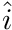

|
Chi-Tech
|
|
Chi-Tech
|
Solver modules in ChiTech connect their solution information to a concept called a Field Function. A field function is considered fully defined when it is connected to both a grid (mesh) and a spatial discretization.

In the same folder (or any of your choice) make a copy of the input you used for Tutorial 1. We will be adding some items to this input file.
The function call chiGetFieldFunctionList() provides us with two items. A lua-table and a count of how many items there are in the table. The items in "fflist" are the text names of the field functions. Each solver has its own defaults.
The first call creates a interpolator of type SLICE. At the time of writing this tutorial we support LINE, SLICE and VOLUME. The default orientation of a slice interpolator is with the cutting plane's normal pointing in the direction of  and the reference point at (0,0,0). We can keep the same orientation but move the reference point to the center of the extrusion (i.e. 1.5). This is achieved with a call to chiFFInterpolationSetProperty() with a property index SLICE_POINT. The last line here is to add a field function to this interpolator. We use the same function but this time with a property index ADD_FIELDFUNCTION.
For very complex meshes it might be prudent to perform initialization before actually solving the systems, since this established the necessary interpolation parameters and allows one to execute the interpolator multiple times after that with minimal cost.
The chiFFInterpolationInitialize() and chiFFInterpolationExecute() should be intuitive to understand. The last function call here is chiFFInterpolationExportPython() which is a utility to export a slice to a python file. Inside this python file there are some default visualization commands but the major utility here is that the field function is now represented as python variables so that the user can define custom visualizations.
Being a useful scripting system, the lua console can itself invoke processes. Here the default export name of the python file will be "ZPFFI00.py". Its actually "ZPFFI0", for Plane-Field-Function-Interpolator-0 but the last digit denotes the processor identification in such a way that the user merely needs to execute the 0-index and the rest will be loaded.
The output procuded is shown below:

 1.8.14
1.8.14